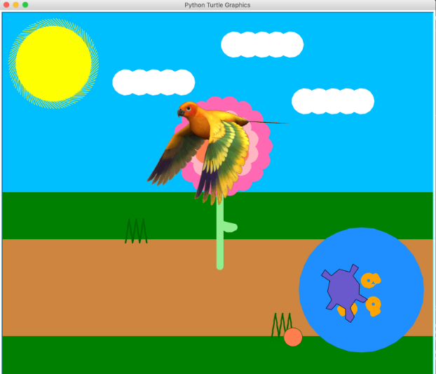
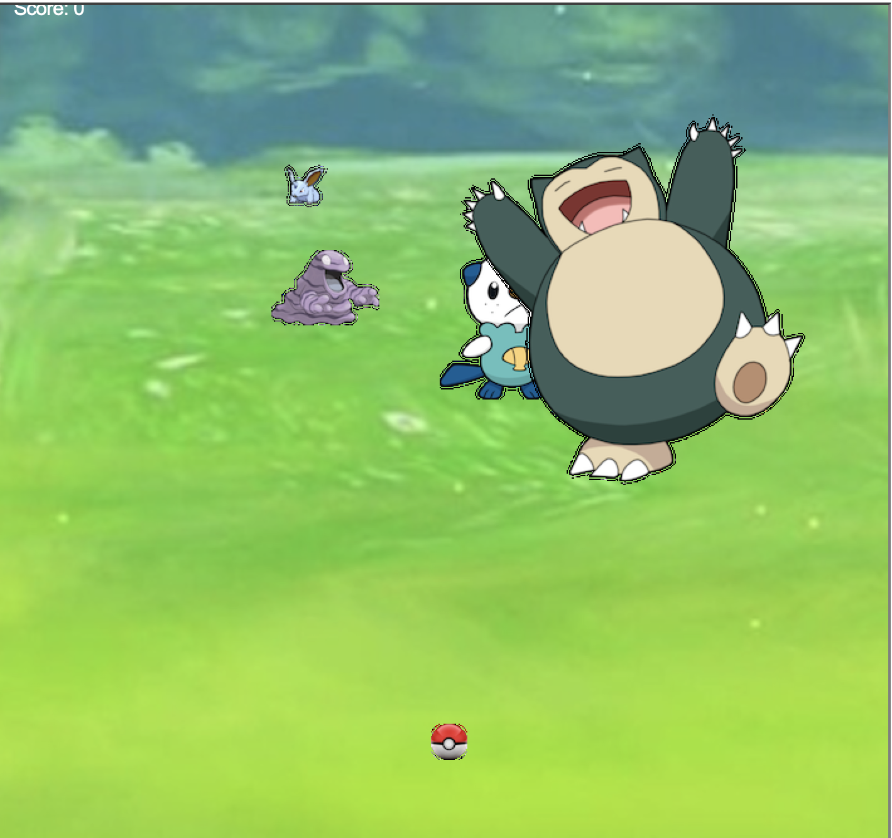
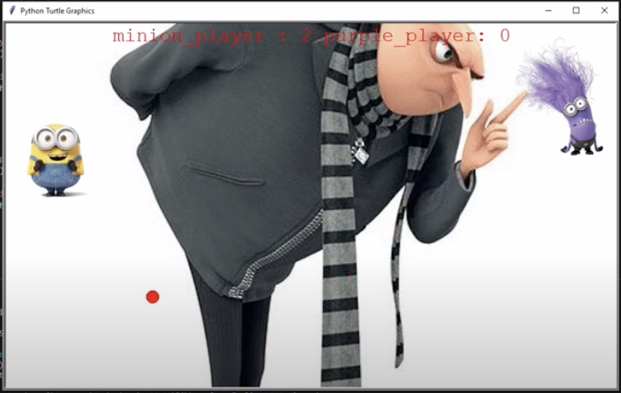

Portfolio
Home
Portfolio
About Me
This is Leyna's Portfolio Page!

This is our project of our turtle, Pablo, running and hitting the flower causing him to spin and change color and then heading to the lake to swim with his fish friends.

This is my project for PLTW 1.2.5. It is essentially a pokemon game where we shoot the Pokeballs at Pokemon while they respawn around different places on the grassy field. Once you shoot the balls, there is a probability that they will not be caught, similar to how Pokemon Go, the game.

This is my project for PLTW 1.3.1. We called our game Minion Pong, as it is based off of the movie Despicable me. We have the minions as the paddles and a ball in the middle that bounces back and forth between either side. If one of the minions doesn't hit the ball back, then the other side gets a point. This process repeats until one team scores 7 points.
